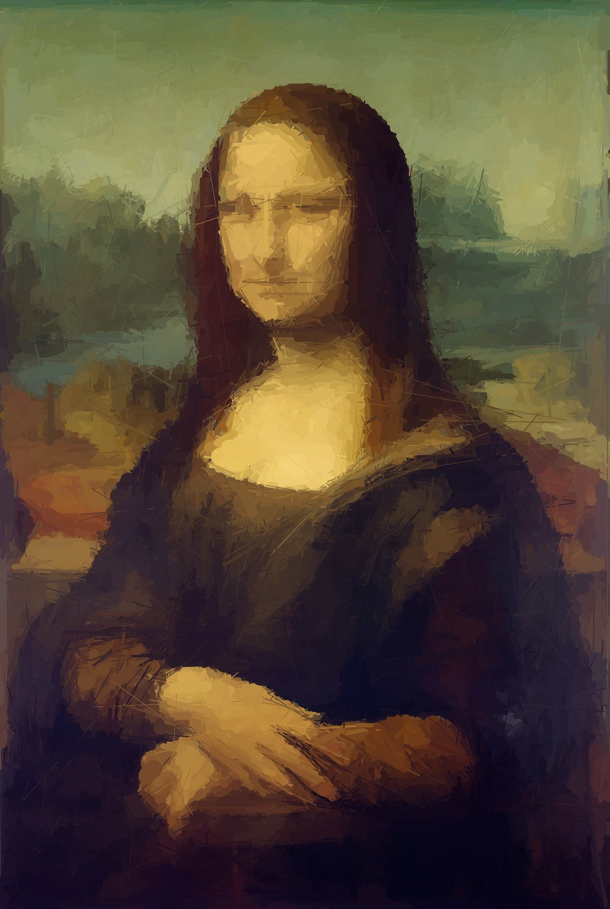
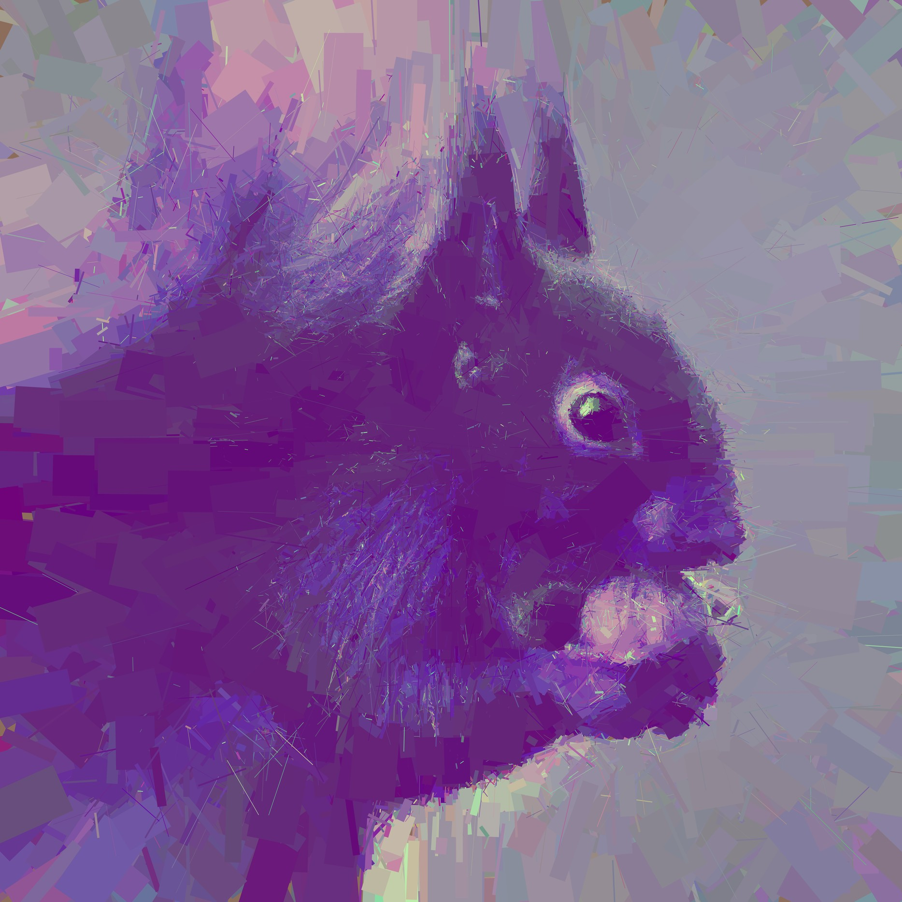
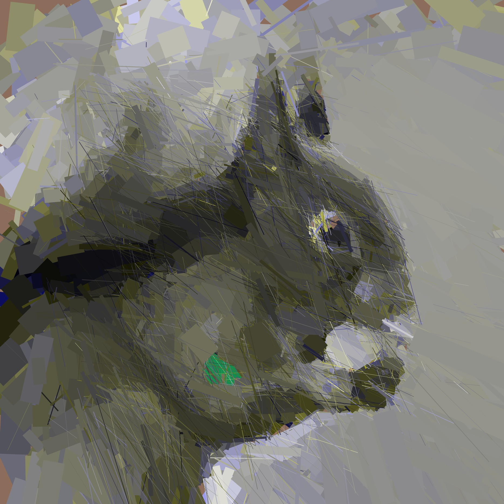
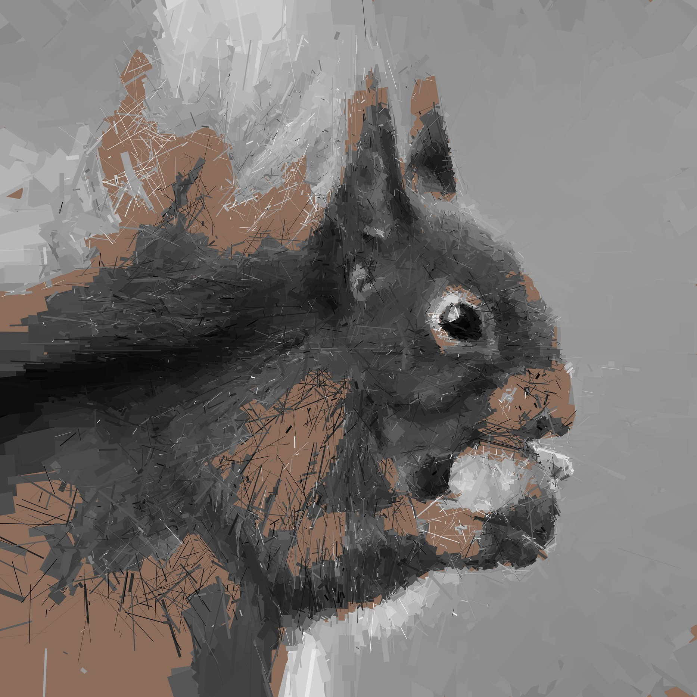
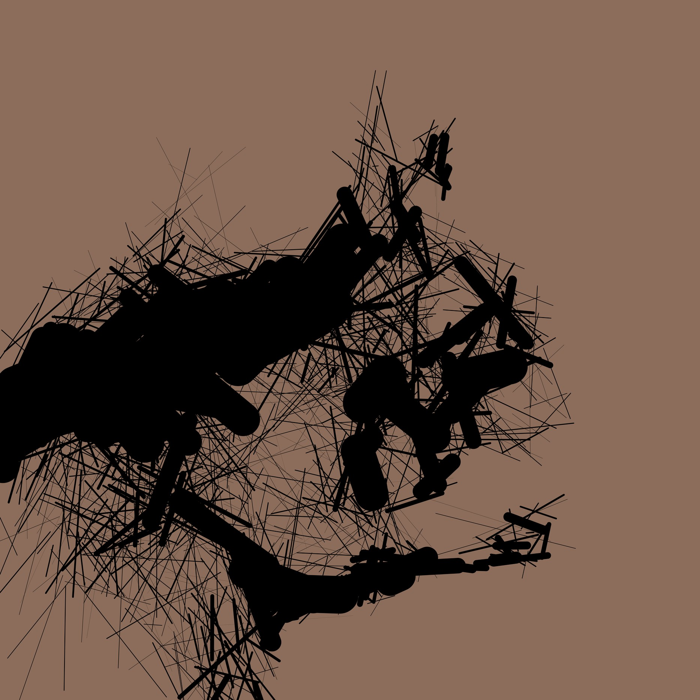
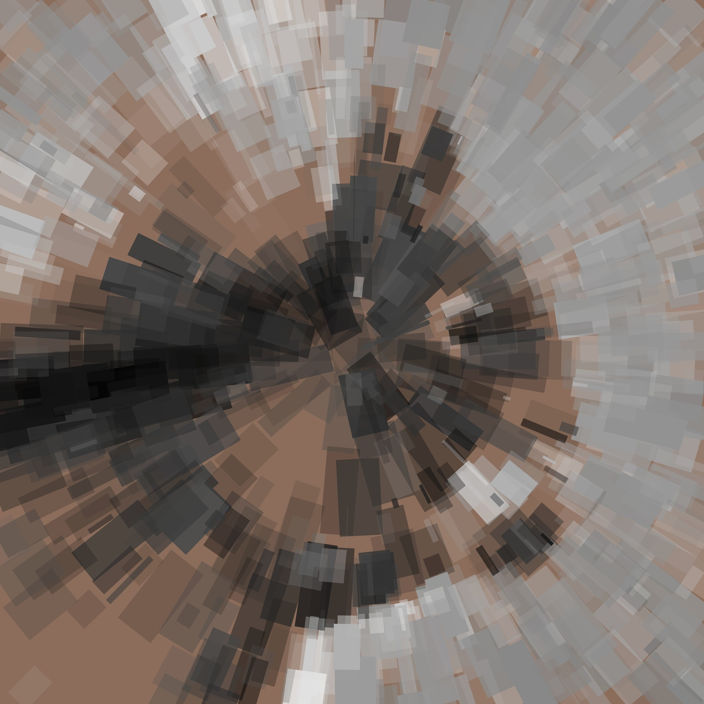
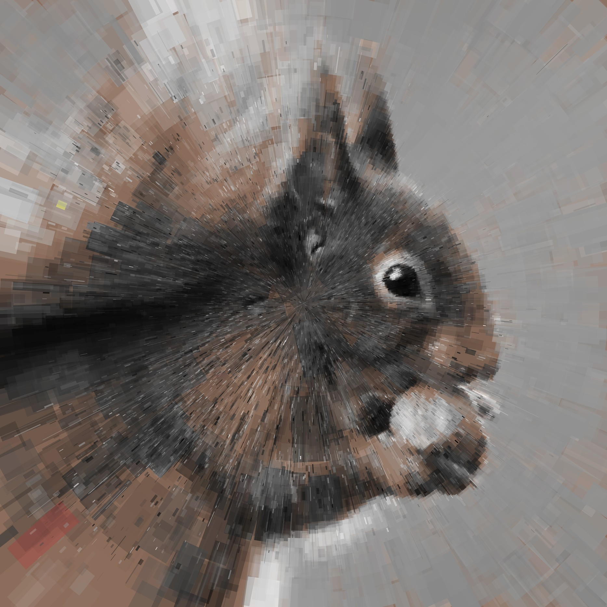

LineReplica

Name: lineReplica
Year: 2017?
Description:
This series is an experiment about approximating images using geometric primitives, mostly lines.
The thing about it is that the program brute-forced the approximation by adding one line every frame, selecting from ~50 lines, seeing which one got the working image closest to the original.
Because of that, I could only run it on very low-resolution images, but it produces vector images.
If I then scale those up again, you see interesting effects which were not present in the original.
Experiments were made with different distance metrics, constraints on the primitives and constraints on their placement.
The original images are largely taken from flickr, I sure hope this is legal.
This was also picked up by Michael Fogleman, my program is not based off his, and my program is also much slower than his :)
      